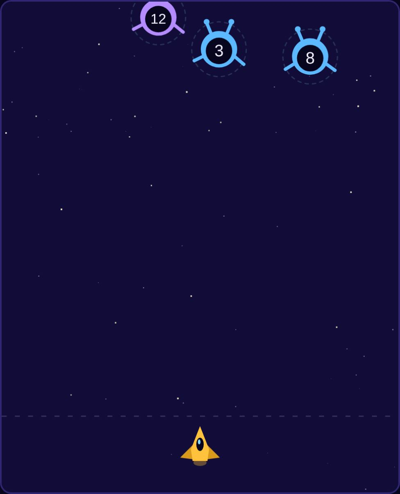
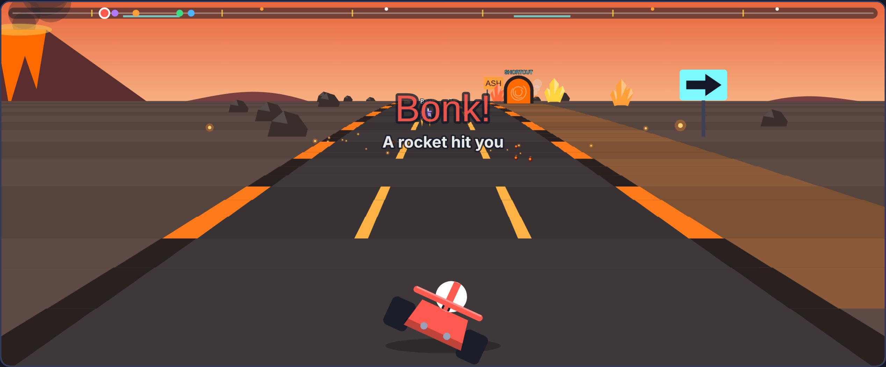
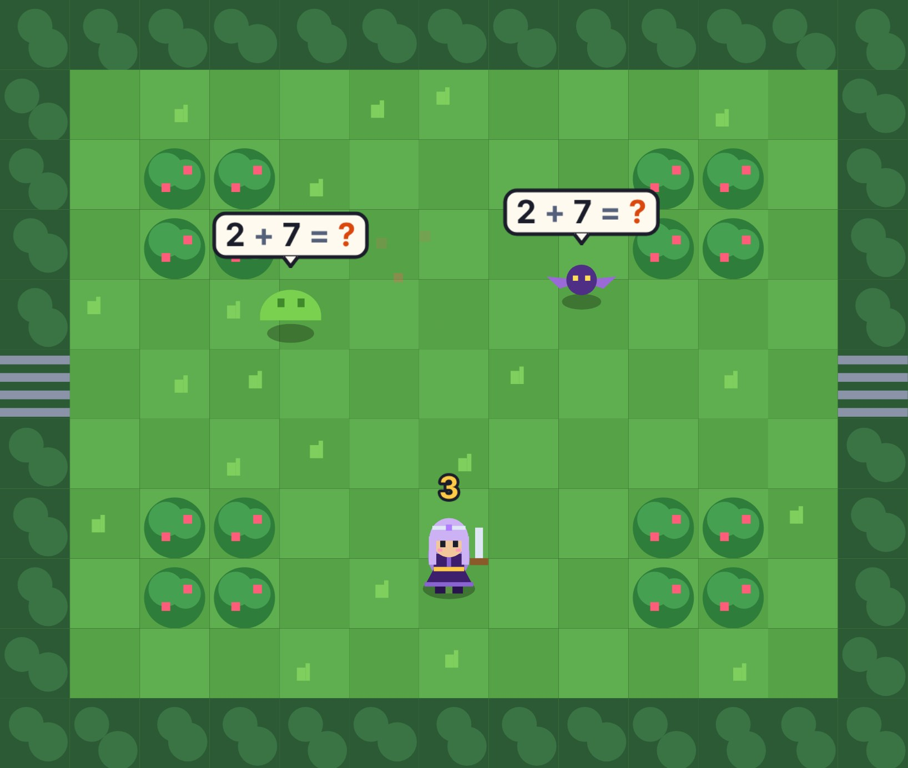
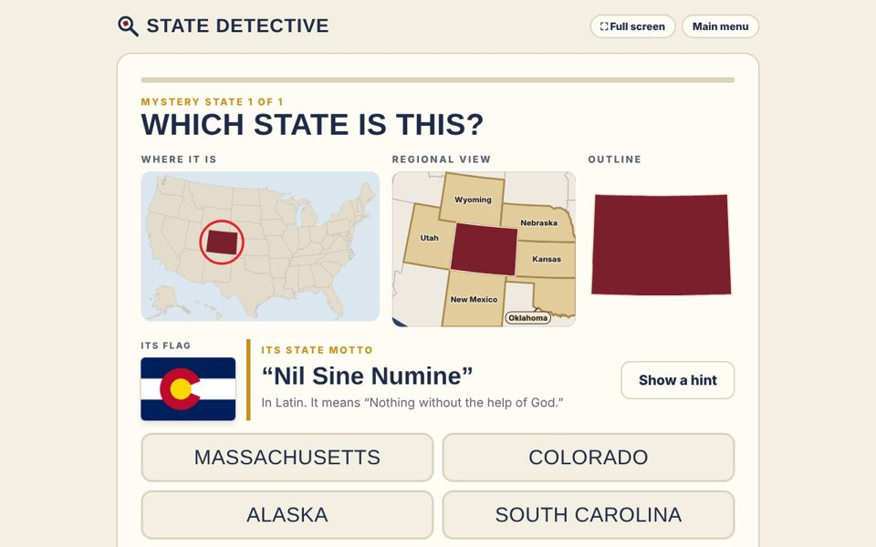
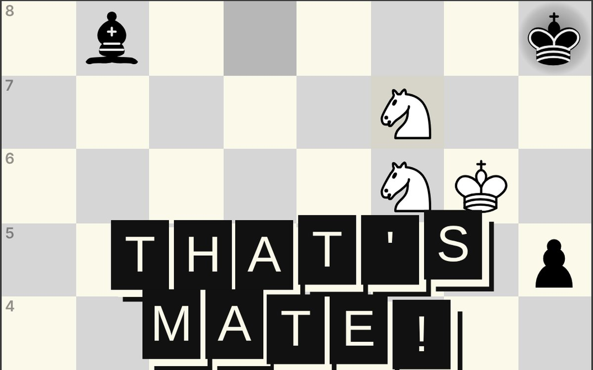

Number Blasters
Aliens fly in carrying numbers. Shoot the one that fills the blank in the problem. Wrong numbers bounce off their shields.
Play →

Number Rally
Race karts on four science-themed tracks. Steer through the gate showing the answer to get a speed boost and a power-up.
Play →

Number Knight
Explore a dungeon where every monster carries an equation. Set your blade to the missing number, then strike. Three stages and three bosses.
Play →

State Detective
Solve the mystery state from its map, outline, flag and motto. Then find out where its name comes from and build a collection of all 50.
Play →

ChessMate
Find the move that forces checkmate in two. Every puzzle is brand new and checked by a built-in solver, so there is always exactly one right first move.
Play →